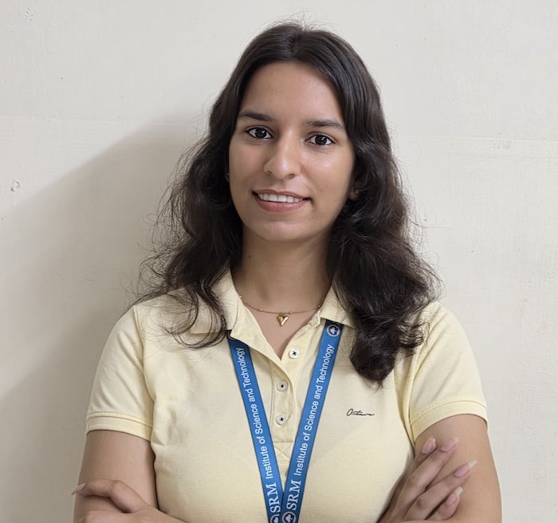

Rajni

Summary
I’m a 2nd-year Computer Science student at SRMIST with a strong focus on software development, problem-solving, and Data Structures.
I have hands-on experience building web and AI-based projects and have demonstrated leadership through HR and team coordination roles.
I’m actively seeking opportunities to apply my skills in real-world environments.
Eductation
Degree
SRM Insitute of Science and Technology, Kattankulathur, Chennai (603203)
- B.Tech : 8.87 CGPA (2024 - 2028)
School
Children's Academy Convent School, Alwar, Rajasthan (301001)
- Class-12th : 72% (2022-2023)
- Class-10th : 93.6% (2021-2020)
Work Experience
DAA Team Lead – PR / HR (April 2025 – Present)
- Led initiatives to increase student participation and engagement.
- Managed event help desks and ensured smooth event execution.
- Coordinated team activities, onboarding processes, and task allocation.
- Facilitated communication and collaboration among team members.
AI/ML Virtual Internship – Eduskill Foundation, AICTE (October 2025 – December 2025)
- Completed a virtual internship focused on Artificial Intelligence and Machine Learning.
- Gained practical knowledge through structured coursework and hands-on learning.
- Applied AI/ML concepts in self-designed projects.
Skills
C, C++, Java, SQL, HTML, and CSS; strong foundation in Data Structures, OOP, DBMS, and basic AI/ML. Familiar with Git, GitHub, and VS Code, with excellent leadership, communication, teamwork, and problem-solving skills.
Certificates
- AWS Academy – Fundamentals of Generative AI
- NPTEL – Programming in Java
- Logical Reasoning and Career Development
- Smart India Hackathon (SIH) 2025 – Participation Certificate
Others
Contact Me